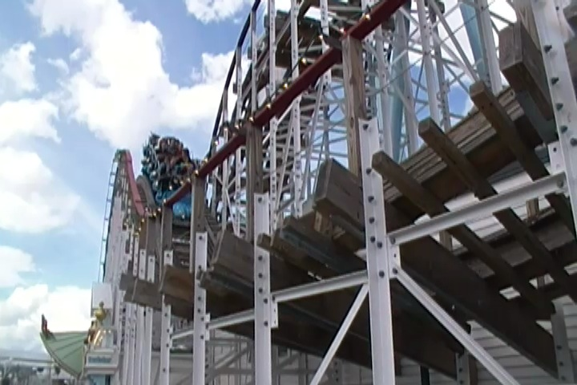

| |
Twister Review

Today, we'll be heading over to Gröna Lund where we'll be reviewing Twister. The park's wooden coaster and while you may not have been able to think that they could fit a wooden coaster into a park as small as this, never underestimate the power of Gröna Lund to cram as many rides into a tight space as possible. We hop in the Timberliners (very nice BTW), and away we go!! We head on up the lifthill. We look around, getting a good view of Gröna Lund and the Baltic Sea right next door. We eventually reach the top, wave to all the other coasters, turn, and head down the first drop. I know it's not very big. In fact, I think I've cliff jumped higher than this first drop. But screw it. It's a lot of fun and does provide us with some good speed. We then hop right over a small little airtime hill. It's not very big, but we just fly right over it, getting some nice floater air, all while getting a good view of Gröna Lund, as well as all the Baltic Sea. We then go through another sort of curved hill, which gives us some decent laterals, and we're keeping all of our speed. It's just flying along. This is pretty good. We then go through this one tiny little hill, so we get a nice little pop of airtime, right underneath Kvasten. So warning. There's a headchopper on this ride. We then go through another tight turn. Slam to the side. We head around and BAM!!! Into another turn in the opposite direction. So even more laterals. This sure is a lot of fun. Especially since this turn is more of a downward helix. We rise up a small hill, only to go into some straight track. Yeah, this part of the ride is essentially the break. This is the breather part of the ride. We go around another turn, and down a small little drop. Make sure you duck, as we go right under Jetline. YAY!!! More headchoppers. We head around another tight turn and SLAM!!! Into a bunny hop. AIRTIME!!! We head up another small little hill, only to head around another turn. Another breather part of the ride. We head down a small little drop, only to go into another banked turn. Wee. This leads us right into yet another banked turn. More laterals, this is really getting fun. Another banked turn. Another little airtime hill. Not a whole lot of airtime here, but we're still going. Still twisting, and still having fun. Another headchopper with Jetline, another tight turn, and brake run. Yep. Sadly, it's all over now. But hey. That was a very fun ride. This ride may not be very big, but it is a lot of fun. It certainly lives up to its name as this ride really is a twister. The whole ride is primarily just laterals and headchoppers. Those are basically its main focus. Though don't worry. It's got some airtime as well. I know this ride has a lot of similarities to another Gravity Group woodie in America, Wooden Warrior. And yeah. There definetly are some similarities between the two rides, with both being really small woodies that pack a powerful punch. So yeah. It may not be the best woodie ever, but it is a fun little ride that is definetly worth checking out sometime.
8/10
Location: Gröna Lund
Opened: 2011
Built by: Gravity Group
Last Ridden: June 24, 2014
Twister Photos




Home
|